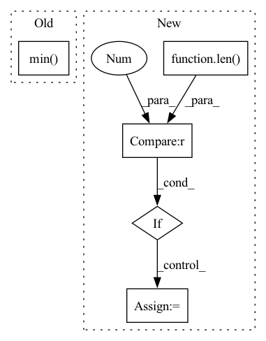

Pattern ID :27870
Before Change
points = np.array(data["search_tree"].data)
potentials = np.random.rand(points.shape[0]) * 1e-3
while (np.min( potentials) < 0.5):
cloud_ind = 0
point_ind = int(np.argmin(potentials))
After Change
input_points = (points[input_inds] - pick_point).astype(np.float32)
input_colors = data["feat"][input_inds].astype(np.float32)
if len(data["label"][input_inds].shape) == 2 :
input_labels = data["label"][input_inds][:, 0]
else:
input_labels = data["label"][input_inds]
if n > 0:
p_list += [input_points]In pattern: SUPERPATTERN
Frequency: 3
Non-data size: 5
Instances Fragment ID: 82799509
Project Name: isl-org/open3d-ml
Commit Name: ac6db93d9b93c4239135e0d9e160da87d3709a8e
Time: 2020-09-22
Author: sanskaragrawal107@gmail.com
File Name: ml3d/tf/models/kpconv.py
M Class Name: KPFCNN
N Class Name: KPFCNN
M Method Name: transform_inference(2)
N Method Name: transform_inference(2)
M Parent Class: BaseModel
N Parent Class: BaseModel
M File Name: ml3d/tf/models/kpconv.py
N File Name: ml3d/tf/models/kpconv.py
M Start Line: 747
M End Line: 771
N Start Line: 740
N End Line: 779
Before Change
else:
x_range = (
min(dist.min() , dist.min()),
max(dist.max(), dist.max())
)
After Change
if all(int(x) == x for x in dist if x is not None):
// If the distribution is discrete, we take all the values in it:
xs = sorted(np.unique(dist))
if len(xs) > 50 :
// If there are too many values, we take only 50, using a constant interval between them:
xs = list(range(int(xs[0]), int(xs[-1]) + 1, int((xs[-1] - xs[0]) // 50)))
else:
// Heuristically take points on x-axis to show on the plot
// The intuition is the graph will look "smooth" wherever we will zoom it Fragment ID: 82799508
Project Name: deepchecks/deepchecks
Commit Name: 0bd8be4792b38c96daa3fdb0c303db46fe3d49ef
Time: 2023-04-02
Author: 92314933+nirhutnik@users.noreply.github.com
File Name: deepchecks/nlp/utils/nlp_plot.py
M Class Name: AnonimousClass
N Class Name: AnonimousClass
M Method Name: get_text_outliers_graph(6)
N Method Name: get_text_outliers_graph(6)
M Parent Class:
N Parent Class:
M File Name: deepchecks/nlp/utils/nlp_plot.py
N File Name: deepchecks/nlp/utils/nlp_plot.py
M Start Line: 113
M End Line: 123
N Start Line: 123
N End Line: 141
Before Change
heatmap = np.array(heatmap.cpu())
heatmap = cv2.resize(heatmap[0], _input.shape[2:])
heatmap = heatmap - np.min( heatmap)
heatmap = heatmap / np.max(heatmap)
return heatmap
After Change
heatmap = (to_numpy(heatmap).transpose(1, 2, 0) * 255).astype(np.uint8)
heatmap = cv2.resize(heatmap, dsize=_input.shape[-2:], interpolation=cv2.INTER_CUBIC)
if len(heatmap.shape) == 2 :
heatmap = heatmap.reshape(heatmap.shape[0], heatmap.shape[1], 1)
heatmap = heatmap.transpose(2, 0, 1).astype(float) / 255 // (N, H, W)
return heatmap
Fragment ID: 82799507
Project Name: ain-soph/trojanzoo
Commit Name: 2bf7c2a2e8acba2592ee17d60d1a59b7bd1bbfe5
Time: 2020-11-24
Author: ain-soph@live.com
File Name: trojanzoo/model/imagemodel.py
M Class Name: ImageModel
N Class Name: ImageModel
M Method Name: grad_cam(3)
N Method Name: grad_cam(3)
M Parent Class: Model
N Parent Class: Model
M File Name: trojanzoo/model/imagemodel.py
N File Name: trojanzoo/model/imagemodel.py
M Start Line: 206
M End Line: 222
N Start Line: 190
N End Line: 212